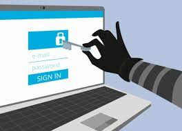

КІБЕРБЕЗПЕКА
Що таке кібербезпека?
Кібербезпека – це комплекс процесів, практичних порад і технологічних рішень, які допомагають захищати важливі системи й мережу від кібератак.
Загроза для кібербезпеки – це умисна спроба отримати доступ до системи окремого користувача або цілої організації. Зловмисники постійно вдосконалюють свої методи атак, щоб уникати виявлення й використовувати нові вразливості. Однак деякі з цих методів досить поширені, і до них можна підготуватися.
Кібератака – спрямовані (навмисні) дії в кіберпросторі, які здійснюються за допомогою засобів електронної комунікації.
Типи загроз для кібербезпеки:
|
 |
Загроза 1: Фішинг |
|
| Опис: | Кіберзлочинці видають себе за надійне джерело, наприклад, банк, брокерську фірму або державну установу для отримання конфіденційної особистої інформації. Їхні цільові об'єкти — імена користувачів, паролі, домашні адреси, номери соціального страхування й кредитних карток. Кіберзлочинці можуть зв'язатися з вами з номера телефона або адреси електронної пошти, які не викликають підозр, і попросити перейти за посиланням, щоб «підтвердити ваш обліковий запис» або «підтвердити вашу особистість». Посилання може привести на вебсайт, який вимагає введення особистої інформації. Як тільки ви введете особисту інформацію, кіберзлочинці можуть використовувати її негайно з метою крадіжки грошей, планування складнішого злочину або продажу даних злочинним мережам. |
На що націлений: |
Отримання конфіденційної особистої інформації (ім’я користувача, паролі, домашня адреса, номер соціального страхування, кредитної картки тощо). |
Чим небезпечний: |
Крадіжка грошей, планування складнішого злочину або продажа даних злочинним мережам. |
Як уникнути: |
Якщо отримуєте електронний лист з проханням надати особисту інформацію, завжди перевіряйте джерело. Електронний лист від законної компанії, наприклад, має закінчуватись основою, яка зазвичай асоціюється із цією компанією, наприклад “XYZperson@fedex.com”. Якщо в електронному листі є посилання, наведіть курсор на посилання, щоб визначити справжнє призначення. Легітимне посилання має привести на вебсторінку, пов'язану з компанією, де ви маєте обліковий запис. Крім того, остерігайтеся клонованих вебсайтів, які здаються реальними. Зауважте, що безпечні вебсайти починаються з “https”, а не “http”. Будь-яка вебсторінка, яка починається з http, є небезпечним сайтом, і не слід вводити конфіденційну інформацію. Пам'ятайте: у компаніях, де ви маєте обліковий запис, вже є ваша особиста інформація. Малоймовірно, що вони звернуться до вас, щоб перевірити вашу інформацію, якщо тільки ви не ініціювали будь-яку транзакцію. Незапитана перевірка є попереджувальним знаком — завжди звертайтеся безпосередньо до компанії, щоб перевірити будь-які запити, перш ніж відповісти на них. |
Загроза 2: Соціальна інженерія |
|
| Опис: | Кіберзлочинці добувають інформацію про вас, доступну в Інтернеті, а потім видають себе за надійне джерело, наприклад, друга, родича або компанію. Вони можуть надіслати електронний лист, зателефонувати або зв'язатися з вами через соціальні мережі так, ніби це хтось, кого ви знаєте. Вони можуть використовувати психологічні маніпуляції, щоб завоювати вашу довіру, отримати особисту інформацію, вчинити шахрайство та ініціювати переказ коштів на рахунок злочинця. |
| На що націлений: | Спочатку збір інформації про вас, потім – маніпулювання вами для отримання коштів шляхом вводу в оману на основі отриманих даних про вас |
| Чим небезпечний: | Отримати особисту інформацію, вчинити шахрайство та ініціювати переказ коштів на рахунок злочинця. |
| Як уникнути: | Обмежте обсяг інформації, доступної про вас у Інтернеті, особливо в соціальних мережах. Встановіть основні правила для членів сім'ї, щоб гарантувати, що вони не розкривають конфіденційну інформацію публічно. Це може бути налаштування ваших облікових записів як «лише приватні» або інші безпечні налаштування. Ніколи не публікуйте особисту інформацію або фотографії, на яких вказана ваша адреса, роботодавець, номерні знаки або інформація про школу ваших дітей, оскільки кіберзлочинці можуть використовувати ці дані з метою безпосередньої атаки на вас. Нагадуємо, що в разі отримання підозрілого повідомлення завжди перевіряйте джерело. Якщо відправник видає себе за друга або родича, зателефонуйте цій людині безпосередньо та попросіть її підтвердити повідомлення. Не відповідайте на жодні адреси електронної пошти або номери телефонів, яких немає у вашій телефонній книзі. Якщо ви сумніваєтеся, ігноруйте пропозицію. |
Загроза 3: Зламування електронної пошти |
|
| Опис: | Кіберзлочинець зламує обліковий запис електронної пошти, отримуючи пароль та інформацію для входу в систему, і шукає електронні листи, пов'язані з листуванням між людиною та її фінансовими установами. Потім кіберзлочинець видає себе за іншу людину, щоб ініціювати переказ коштів на рахунок злочинця або вчинити інший вид шахрайства. |
| На що націлений: | Отримання логінів,паролей та інформації для входу в систему, як користувача, так і його знайомих по листуванню |
| Чим небезпечний: | Переказ коштів на рахунок злочинця або вчинити інший вид шахрайства (розсилка спама, розсилка листів від імені користувача знайомим по листуванню з проханням надіслати кошті тощо) |
| Як уникнути: | Ніколи не повідомляйте пароль електронної пошти нікому, крім вашого постачальника послуг, наприклад, Yahoo або Google. Використовуйте багатофакторну аутентифікацію — метод аутентифікації, який вимагає надання двох або більше факторів перевірки перед отриманням доступу, щоб переконатися, що ваша інформація в безпеці. Зробіть пароль досить довгим (зазвичай не менше восьми символів) і використовуйте комбінацію прописних і рядкових літер, цифр та буквено-цифрових символів. Не додавайте до пароля дні народження, адреса або слова, що часто використовуються. Змінюйте пароль кожні кілька місяців, щоб уникнути несанкціонованого входу. |
Загроза 4: Зламування Wi-Fi |
|
| Опис: | Кіберзлочинець зламує загальнодоступну мережу Wi-Fi, щоб вкрасти особисту інформацію, таку як номери кредитних карток, банківських рахунків і номери маршрутизації, або іншу конфіденційну інформацію. Це може відбуватися в готелях, аеропортах, публічних бібліотеках, кафе або в будь-якому іншому місці, де доступний громадський Wi-Fi. Це особливо поширена тактика в місцях відпочинку еліти. |
| На що націлений: | Отримання конфіденційної особистої інформації ( номер кредитної картки, банківського рахунку, номер маршрутизації тощо) |
| Чим небезпечний: | Крадіжка грошей, планування складнішого злочину або продажа даних злочинним мережам. |
| Як уникнути: | Уникайте використання загальнодоступних і відкритих бездротових мереж або точок доступу для входу на захищені паролем сайти, такі як банківські рахунки, канали соціальних мереж або електронна пошта. Якщо потрібно використовувати точку доступу Wi-Fi, розгляньте можливість використання віртуальної приватної мережі (ВПМ), яка забезпечує конфіденційність та анонімність за рахунок створення приватної мережі із загальнодоступного інтернет-з'єднання з метою захисту з'єднання. |
Загроза 5: Шкідливе ПЗ |
|
| Опис: | Кіберзлочинці створюють шкідливі програми для проникнення в комп'ютери та комп'ютерні системи або їхнього відключення з метою крадіжки даних або отримання несанкціонованого доступу до мережі.Шкідливе програмне забезпечення – це загальний термін для програм, створених зловмисниками, зокрема хробаків, зловмисних програм із вимогою викупу, шпигунського програмного забезпечення й вірусів. Воно шкодить комп’ютерам і мережам, змінюючи або видаляючи файли, видобуваючи делікатні дані, як-от паролі й номери рахунків, а також надсилаючи зловмисні електронні листи чи трафік. Зловмисники, які отримують доступ до мережі, можуть інсталювати шкідливе програмне забезпечення, але частіше саме окремі користувачі випадково розгортають його, перейшовши за ненадійним посиланням або завантаживши уражене вкладення. Прикладами шкідливих програм є віруси, черв'яки, троянські коні, програми-вимагачі та шпигунські програми. Кіберзлочинці можуть встановити шкідливе ПЗ на комп'ютері, коли користувач клацає небезпечне посилання, відкриває заражений файл (наприклад, вкладення) або відвідує легальний вебсайт, що містить рекламне ПЗ. |
| На що націлений: | Проникнення в комп'ютери та комп'ютерні системи або їхнього відключення з метою крадіжки даних або отримання несанкціонованого доступу до мережі. |
| Чим небезпечний: | Залежить від того, на що спрямоване шкідливе ПЗ:
|
| Як уникнути: | Не переходьте за підозрілими посиланнями, не відкривайте спливаючі вікна з рекламою та небажані вкладення. Уникайте будь-яких вебсайтів, які генерують попередження від інтернет-провайдера. Забезпечте безпеку особистих пристроїв і завжди захищайте їх паролем. Розгляньте можливість придбання пакета програмного забезпечення для захисту від шкідливих програм, яке покликане виявляти та знищувати шкідливі програми. Якщо ви переконані, що на комп'ютері встановлено шкідливе ПЗ, зверніться до свого інтернет-провайдера або довіреного фахівця з безпеки, який допоможе в його видаленні. |
Як захистити себе від кібератак?
Дотримайтесь кібергігієни
Кібергігієна – це набір процедур, які зменшують ризик атаки. Завдяки принципам кібергігієни, як-от доступу з мінімальними правами та багатофакторній автентифікації, несанкціонованим особам важче отримувати доступ до вмісту. Також вона включає типові рекомендації, як-от оновлення програмного забезпечення та створення резервної копії даних, що дає змогу зменшити кількість системних уразливостей.
Загальні поради: |
|
|
Рекомендується розпочати з надійного пароля шифрування, а також віртуальної приватної мережі під час використання загальнодоступного Wi-Fi. VPN (скорочення від віртуальної приватної мережі) буде шифрувати весь трафік, що походить від ваших пристроїв, доки він не досягне пункту призначення. Якщо кіберзлочинцям вдасться зламати лінію зв’язку, вони нічого не перехоплять, крім зашифрованих даних. Рекомендується використовувати VPN щоразу, коли ви підключаєтеся до загальнодоступної мережі Wi-Fi, будь то магазин, бібліотека, кафе, готель, аеропорт тощо |
|
Не надавайте свої особисті дані в системі (логін, пароль) іншим особам. Блокуйте або вимикайте пристрій (ПК, ноутбук, планшет, смартфон тощо), якщо залишаєте його на деякий час без уваги. Пароль від пристрою повинен бути недоступний для сторонніх осіб (краще його взагалі запам’ятати або зберігати в недоступному для оточуючих місці) |
|
Ця інформація може бути використана проти вас, наших близьких, оточуючих, вашої компанії чи підприємствах у кібератаках соціальної інженерії. Не використовуйте нічого, що б дало змогу вас ідентифікувати чи порушити вашу приватність чи приватність оточуючих |
Безпека пристроїв |
|
|
Захистіть свої пристрої паролем, графічним ключем чи сканером відбитка пальця, щоб ніхто крім вас фізично не міг отримати доступ до вашого пристрою |
|
Паролі повинні бути надійними та означати щось унікальне тільки для вас і ні для кого іншого(наприклад, комбінація «чашка, клавіатура, собака» чи «trWE!-h234h09hj#yujQk»). Надійний пароль містить не менше 8 символів (краще – більше 8), числа і символи в обох регістрах (великі та малі літери) а також спеціальні символи (!,%,#,- тощо), і це не повинна бути логічна фраза (фраза накшталт «Мені_18_РОКІВ!» - не є надійним паролем) Не використовувати один пароль на всіх сайтах, додатках і пристроях. Використовуйте менеджери паролів, які дуже корисні та забезпечують їхню безпеку. Сховище паролів допоможе відстежувати термін дії кожного пароля, які додаткові заходи безпеки були застосовані, а також створювати складні паролі, щоб не доводилося їх вводити або запам’ятовувати. Вам потрібно буде запам’ятати лише один надійний пароль, який знизить втому від кіберзагроз і зробить ваше життя простіше та безпечніше. |
|
Збережені в браузері паролі можуть прискорити та спростити вхід до онлайн-ресурсів, але, як відомо, їх легко вкрасти. Якщо ви використовуєте той самий пароль для особистих і бізнес-додатків, а кіберзлочинець краде його, небезпека зростає в геометричній прогресії. Вкрадений пароль може надати ключі до всієї ІТ-мережі вашої організації або вашого будинку. Щоб уникнути ризику, пов’язаного з використанням паролів на основі браузера, корпоративні інструменти керування паролями включають можливість керування обліковими даними для веб-застосунків та програм на основі браузера . Користувачі можуть легко отримати доступ до інструментів з необхідними дозволами, в той час як ІТ-команди збережуть централізовану видимість і контроль. |
|
Багатофакторна автентифікація (MFA) – розширена автентифікація, метод контролю доступу до комп'ютера, в якому користувачеві для отримання доступу до інформації необхідно пред'явити більше одного «доказу механізму автентифікації» (наприклад, підтвердити автентифікацію за номером телефона). |
|
Переконайтеся, що ви налаштували пристрої так, щоб вони автоматично встановлювали операційне програмне забезпечення та оновлення програм. Кіберзлочинці постійно аналізують операційні системи на наявність вразливостей. Це свого роду “золото”, коли ви виходите в Інтернет, та використовуєте застарілі або невиправлені операційні системи або програми. Обов’язково встановіть антивірусне програмне забезпечення на всіх пристроях, де це можливо і особливо на тих, які контактують з інтернетом (смартфон, планшет, ноутбук, комп’ютер тощо) та регулярно оновлюйте його. |
|
Видаляйте «зайві» програми та встановлюйте необхідні дозволи існуючим програмам (не варто всім програмам надавати доступ до ваших контактів, камери, геолокації тощо – тільки тим, яким це дійсно необхідно) |
|
Встановлюйте ПЗ тільки з офіційних каналів виробників з відмінною репутацією. Найкращий варіант – встановлення ліцензійного ПЗ |
|
Зберігати резервні копії особистих даних на пристроях без доступу до інтернету. Це не вбереже від кібератак, але захистить важливі дані у випадку їх знищення на основному носії. |
Phishing (Фішінг) |
|
|
Завжди перевіряйте джерело, особливо якщо від вас вимагають швидко перевести гроші чи щось негайно зробити. Це стосується дзвінків, повідомлень чи листів від знайомої людини, банку, фінансової чи державної установи, міністерства, органів місцевої влади, постачальника послуг, провайдера тощо. Якщо ви отримали такий лист чи повідомлення, спочатку зателефонуйте цій людині чи в організацію і дізнайтеся, чи дійсно це їх прохання. Якщо вам подзвонили з проханням негайно допомогти (перевести гроші), пройти верифікацію (повідомити особисті дані), підтвердити чи спростувати якісь дії (верифікація > повідомити особисті дані > втрата грошей з рахунку) - зв’яжиться з співрозмовником за допомогою інших каналів зв’язку (інший номер телефону, Telegram, Viber, WhatsApp, Signal тощо) або/та, якщо такої можливості нема, спитайте щось таке, про що знаєте тільки ви так, щоб ваш співрозмовник повинен був дати розгорнуту відповідь (а не відповісти Так чи Ні). Також можна запропонувати приїхати і розібратися в ситуації «на місці» (дізнатись, куди приїхати, в який час, з ким зустрітися тощо). Якщо дзвінок з банку чи установи – зателефонуйте їм самі по ВАШИМ телефонам. Пам'ятайте: у компаніях, де ви маєте обліковий запис, вже є ваша особиста інформація. Малоймовірно, що вони звернуться до вас, щоб перевірити вашу інформацію, якщо тільки ви не ініціювали будь-яку транзакцію. Незапитана перевірка є попереджувальним знаком — завжди звертайтеся безпосередньо до компанії, щоб перевірити будь-які запити, перш ніж відповісти на них. |
|
Не відкривайте сумнівні листи та не переходьте за посиланнями в них. Електронний лист від законної компанії, наприклад, має закінчуватись основою, яка зазвичай асоціюється із цією компанією, наприклад “XYZperson@fedex.com”. Якщо в електронному листі є посилання, наведіть курсор на посилання, щоб визначити справжнє призначення. Легітимне посилання має привести на вебсторінку, пов'язану з компанією, де ви маєте обліковий запис. Крім того, остерігайтеся клонованих вебсайтів, які здаються реальними. Зауважте, що безпечні вебсайти починаються з “https”, а не “http”. Будь-яка вебсторінка, яка починається з http, є небезпечним сайтом, і не слід вводити конфіденційну інформацію. |
|
Якщо ви не впевнені в достовірності та/або безпечності листа чи посилання, не поширюйте їх в інтернеті та через знайомих, оскільки саме так розповсюджуються фішінгові листи чи посилання та шкідливе ПЗ |
|
Ніколи не повідомляйте паролі електронної пошти, банківських карт пошти нікому, крім вашого постачальника послуг, наприклад, Yahoo або Google. Перед тим, як вводити особисту інформацію, ретельно перевірте зовнішній вигляд та дані (електронну адресу) сайту. Особливо зверніть на це увагу, якщо ви потрапили на цей сайт через посилання з іншого сайту чи з листаю. Непоодинокі випадки використання сайтів-імітаторів, які майже не відрізняються від оригінального сайту (лише однією буквою чи символом у електронній адресі), які незаконно отримують особисті дані (логін, пароль, № банківської картки тощо) людини і крадуть її гроші. |
Соціальна інженерія |
|
|
З обережністю ставтесь до будь-яких заманливих та/або несподіваних пропозицій особливо з боку незнайомих осіб чи компаній. Зазвичай такі пропозиції –проийоми соціальної інженерії з метою отримати від вас особисті дані та/або гроші чи інші ресурси (інформацію про ваше підприємство, оточуючих тощо) |
|
Ніколи не публікуйте особисту інформацію або фотографії, на яких вказана ваша адреса, роботодавець, номерні знаки або інформація про школу ваших дітей тощо. Обмежте обсяг інформації, доступної про вас, у Інтернеті, особливо в соціальних мережах. |
|
Якщо ви не впевнені в достовірності та/або безпечності даних, не поширюйте їх в інтернеті та через знайомих, оскільки саме так розповсюджуються деякі фішінгові листи та шкідливе ПЗ |
|
Якщо хтось, особливо малознайомі люди, намагаються змусити вас швидко виконати якусь дію, яку ви раніше не планували (перерахувати грошу для допомоги знайомій людині, повідомити якісь дані, кудись поїхати чи відповісти на декілька питань) – будьте уважні, вами намагаються маніпулювати. Часто це робиться в шахрайських цілях: людина, яка змушена швидко прийняти рішення чи відповісти на питання в стані стресу часто видає особисту конфіденційну інформмацію, що дозволяє шахраям її ошукати. Тому зберігайте холодний розум і не виконуйте того, чого зазвичай не зробили би. Якщо в процесі комунікації співрозмовник намагається отримати особисті чи приватні дані – перервіть таку комунікацію. |
Що робити, якщо сталася кібератака, куди звертатися та інші питання особистої кібербезпеки Ви можете дізнатися, завітавши до нашої сторінки ОСОБИСТА КІБЕРБЕЗПЕКА: ЦЕ СТОСУЄТЬСЯ КОЖНОГО Переглянути освітні серіали з кібербезпеки від українських експертів
За матеріалами: